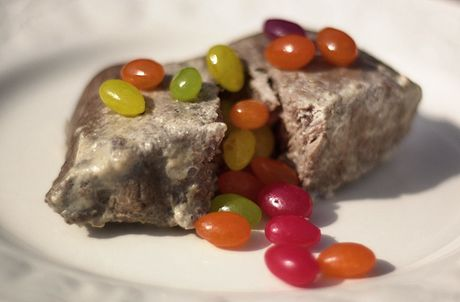

Milk Steak

Description
Have you ever boiled denim all day and craved a succulent milk steak? Well this is the perfect recipe for you!
Ingredients
- Steak
- Whole Milk
- Jelly Beans (Optional)
Steps
- Leave steak out at room temperature for 30 minutes.
- Bring milk to boil in large skillet.
- Reduce heat to medium and place steak(s) on skillet. Let cook for 8 minutes on each side.
- Let sit for 5min and serve with side of jelly beans.